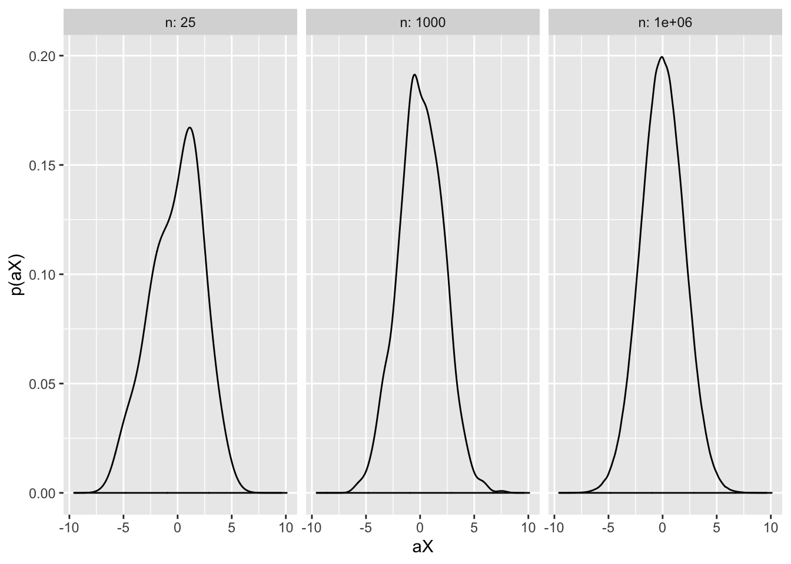
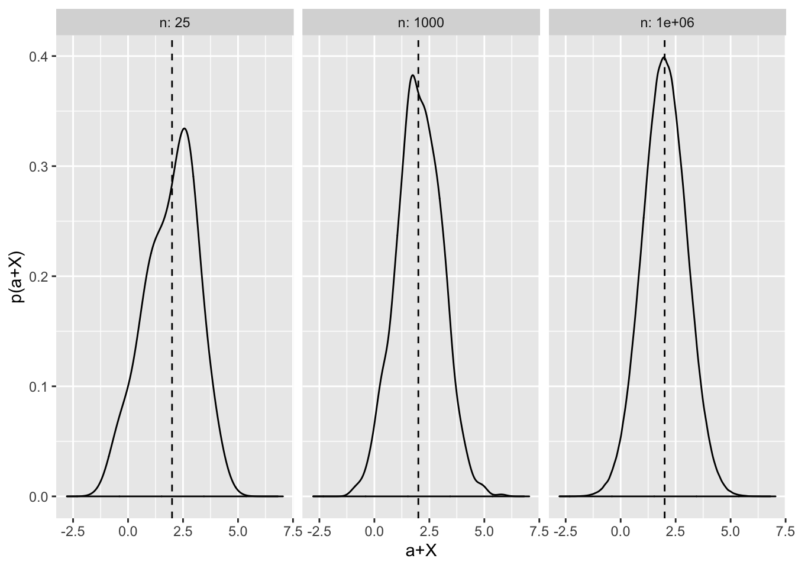

Chapter 5 Slutsky’s Theorem
5.1 Theorem in plain English
Slutsky’s Theorem allows us to make claims about the convergence of random variables. It states that a random variable converging to some distribution \(X\), when multiplied by a variable converging in probability on some constant \(a\), converges in distribution to \(a \times X\). Similarly, if you add the two random variables, they converge in distribution to \(a\) plus \(X\). More formally, the theorem states that if \(X_n \xrightarrow{d} X\) and \(A_n \xrightarrow{p}\), where \(a\) is a constant, then:
- \(X_n + A_n \xrightarrow{d} X + a\)
- \(A_nX_n \xrightarrow{d} aX\)
Note that if \(A_n\) or \(B_n\) do not converge in probability to constants, and instead converge towards some distribution, then Slutsky’s Theorem does not hold. More trivially, if all variables converge in probability to constants, then \(A_nX_n + B_n \xrightarrow{p} aX+B\).
5.2 Coded demonstration
This theorem is reasonably intuitive. Suppose that the random variable \(X_n\) converges in distribution to a standard normal distribution \(N(0,1)\). For part 1) of the Theorem, note that when we multiply a standard normal by a constant we “stretch” the distribution (assuming \(|a|>1\), else we “compress” it). Recall from the discussion of the standard normal in Chapter 5 that \(aN(0,1) = N(0,a^2)\). As \(n\) approaches infinity, therefore, by definition \(A_n \xrightarrow{p} a\), and so the degree to which the standard normal is stretched will converge to that constant too. To demonstrate this feature visually, consider the following simulation:
library(ggplot2)
set.seed(89)
N <- c(25,1000,1000000)
results <- data.frame(n = as.factor(levels(N)),
X_n = as.numeric(),
A_n = as.numeric(),
ax = as.numeric())
for (n in N) {
X_n <- rnorm(n)
A_n <- 2 + exp(-n)
aX <- A_n * X_n
results <- rbind(results, cbind(n, X_n, A_n, aX))
}
ggplot(results, aes(x = aX)) +
facet_wrap(n~., ncol = 3, labeller = "label_both") +
geom_density() +
labs(y = "p(aX)")
Here we have defined two random variables: X_n is a standard normal, and A_n converges in value to 2. Varying the value of n, I take \(n\) draws from a standard normal distribution and calculate the value the converging constant \(A_n\). I then generate the product of these two variables. The figure plots the resulting distribution aX. We can see that as n increases, the distribution becomes increasingly normal, remains centred around 0 and the variance approaches 4 (since 95% of the curve is approximately bounded between \(0 \pm 2\times\sqrt{var(aX)} = 0 \pm 2\times2 = 0 \pm 4\)).
Similarly, if we add the constant \(a\) to a standard distribution, the effect is to shift the distribution in its entirety (since a constant has no variance, it does not ‘’stretch’’ the distribution). As \(A_n\) converges in probability, therefore, the shift converges on the constant \(a\). Again, we can demonstrate this result in R:
library(ggplot2)
set.seed(89)
N <- c(25,1000,1000000)
results <- data.frame(n = as.factor(levels(N)),
X_n = as.numeric(),
A_n = as.numeric(),
a_plus_X= as.numeric())
for (n in N) {
X_n <- rnorm(n)
A_n <- 2 + exp(-n)
a_plus_X <- A_n + X_n
results <- rbind(results, cbind(n, X_n, A_n, a_plus_X))
}
ggplot(results, aes(x = a_plus_X)) +
facet_wrap(n~., ncol = 3, labeller = "label_both") +
geom_density() +
geom_vline(xintercept = 2, linetype = "dashed") +
labs(y = "p(a+X)", x="a+X")
As n becomes larger, the resulting distribution becomes approximately normal, with variance of 1 and a mean value centred around \(0 + a = 2\).
Slutsky’s Theorem is so useful precisely because it allows us to combine multiple random variables with known asymptotics, and retain this knowledge i.e. we know what the resultant distribution will converge to assuming \(n \to \infty\).
5.3 Proof of Slutsky’s Theorem
Despite the intuitive appeal of Slutsky’s Theorem, the proof is less straightforward. It relies on the continuous mapping theorem (CMT), which in turns rests on several other theorems such as the Portmanteau Theorem. To avoid the rabbit hole of proving all necessary antecedent theorems, I simply introduce and state the continuous mapping theorem (CMT) here, and then show how this can be used to prove Slutsky’s Theorem.
5.3.1 CMT
The continuous mapping theorem states that if there is some random variable such that \(X_n \xrightarrow{d} X\), then \(g(X_n) \xrightarrow{d} g(X)\), so long as \(g\) is a continuous function. In approximate terms (which are adequate for our purpose), a continuous function is one in which for a given domain the function can be represented as an single unbroken curve (or hyperplane in many dimensions). For example, consider the graph of \(f(x) = x^{-1}\). For the domain \(D_{+}: \mathbb{R} > 0\), this function is continuous. But for the domain \(D_{\infty}: \mathbb{R}\), the function is discontinuous because the function is undefined when \(x = 0\).
In short, CMT states that a continuous function preserves the asymptotic limits of a random variable. More broadly (and again, I do not prove this here), CMT entails that \(g(P_n,Q_n,...,Z_n) \xrightarrow{d} g(P,Q,...,Z)\) if all \(P_n, Q_n,...\) etc. converge in distribution to \(P,Q,...\) respectively.
5.3.2 Proof using CMT
How does this help prove Slutsky’s Theorem? We know by the definitions in Slutsky’s Theorem that \(X_n \xrightarrow{d} X\) and, by a similar logic, we know that \(A_n \xrightarrow{d} a\) (since \(A_n \xrightarrow{p} a\), and converging in probability entails converging in distribution). So we can note that the joint vector \((X_n, A_n) \xrightarrow{d} (X,a)\). By CMT, therefore, \(g(X_n, A_n) \xrightarrow{d} g(X,a)\). Hence, any continuous function \(g\) will preserve the limits of the respective distributions.
Given this result, it is sufficient to note that both addition and multiplication are continuous functions. Again, I do not show this here but the continuity of addition and multiplication (both scalar and vector) can be proved mathematically (for example see one such proof here For an intuitive explanation, think about the diagonal line \(y=X\) – any multiplication of that line is still a single, uninterrupted line (\(y = aX\)) assuming \(a\) is a constant. Similarly, adding a constant to the function of a line also yields an uninterrupted line (e.g. \(y= X + a\)).
Hence, CMT guarantees both parts 1 and 2 of the Theorem. \(\square\)
5.4 Applications
Slutsky’s Theorem is a workhorse theorem that allows researchers to make claims about the limiting distributions of multiple random variables. Instead of being used in applied settings, it typically underpins the modelling strategies used in applied research. For example, Aronow and Samii (2016) consider the problem of weighting multiple regression when the data sample is unrepresentative of the population of interest. In their proofs, they apply Slutsky’s Theorem at two different points to prove that their weighted regression estimates converge in probability on the weighted expectation of individual treatment effects, and subsequently, that the same coefficient converges in probability to the true average treatment effect in the population.
5.4.1 Proving the consistency of sample variance, and the normality of the t-statistic
In the remainder of this chapter, I consider applications of both Central Mapping Theorem and Slutsky’s Theorem in fundamental statistical proofs. I first show how CMT can be used to prove the consistency of the variance of a random variable, and subsequently how in combination with Slutsky’s Theorem this helps prove the normality of a t-statistic. These examples are developed from David Hunter’s notes on asymptotic theory that accompany his Penn State course in large-sample theory.
5.4.1.1 Consistency of the sample variance estimator
First, let us define the sample variance (\(s^2_n\)) of a sequence of i.i.d random variables drawn from a distribution \(X\) with \(\mathbb{E}[X] = \mu\) and \(var(X) = \sigma^2\) as:
\[ s^2_n = \frac{1}{n-1}\sum_{i=1}^n (X_i - \bar{X_n})^2.\]
We can show that the sample variance formula above is a consistent estimator of the true variance \(\sigma^2\). That is, as the sequence of i.i.d. random variables \(X_1, X_2,...\) increases in length, the sample variance estimator of that sequence converges in probability to the true variance value \(\sigma^2\).
We can prove this by redefining \(s^2\) as follows:
\[ s^2_n = \frac{n}{n-1} \left[\frac{1}{n}\sum_{i=1}^n(X_i - \mu)^2 - (\bar{X_n}-\mu)^2 \right], \] which clearly simplifies to the conventional definition of \(s^2\) as first introduced.
From here, we can note using WLLN, that \((\bar{X_n} - \mu) \xrightarrow{p} 0\), and hence that \((\bar{X_n}-\mu)^2 \xrightarrow{p} 0\). Note that this term converges in probability to a constant. Moreover, \(\frac{1}{n}\sum_{i=1}^n(X_i - \mu)^2 \xrightarrow{p} \mathbb{E}[X_i - \mu] = var(X) = \sigma^2\), by definition.
Now let us define an arbitrary continuous function \(g(A_n,B_n)\). We know by CMT that if \(A_n \xrightarrow{p} A, B_n \xrightarrow{p} B\) then \(g(A_n, B_n) \xrightarrow{p} g(A,B)\). And hence, using the implications above we know that for any continuous function \(g\) that \(g(\frac{1}{n}\sum_{i=1}^n(X_i - \mu)^2, (\bar{X_n} - \mu)) \xrightarrow{p} g(\sigma^2,0)\).
Since subtraction is a continuous function, we therefore know that:
\[ \left[\frac{1}{n}\sum_{i=1}^n(X_i - \mu)^2 - (\bar{X_n}-\mu)^2\right] \xrightarrow{p} \left[\sigma^2 - 0\right] = \sigma^2.\]
Separately we can intuitively see that \(\frac{n}{n-1} \xrightarrow{p} 1.\) Hence, by applying CMT again to this converging variable multiplied by the converging limit of the above (since multiplication is a continuous function), we can see that:
\[ s^2_n \xrightarrow{p} 1 \times \sigma^2 = \sigma^2 \;\;\; \square\]
5.4.1.2 Normality of the t-statistic
Let’s define a t-statistic as:
\[ t_n = \frac{\sqrt{n}(\bar{X}_n-\mu)}{\sqrt{\hat{\sigma^2}}}\]
By the Central Limit Theorem (CLT, Chapter 5), we know that for a random variable \(X\) with mean \(\mu\) and variance \(\sigma^2\) that \(\sqrt{n}(\bar{X}_n - \mu) \xrightarrow{d} N(0,\sigma^2)\).
We also know from the proof above that if \(\hat{\sigma}^2 = s^2\) then \(\hat{\sigma}^2 \xrightarrow{p} \sigma^2\) – a constant. Given this, we can also note that \(\frac{1}{\hat{\sigma^2}} \xrightarrow{p} \frac{1}{\sigma^2}\).
Hence, by Slutsky’s Theorem:
\[\begin{align} \sqrt{n}(\bar{X}_n-\mu) \times \frac{1}{\sqrt{\sigma^2}} &\xrightarrow{d} N(0,\sigma^2) \times \frac{1}{\sqrt{\sigma^2}} \\ &= \sigma N(0,1) \times \frac{1}{\sigma}\\ &= N(0,1) \;\;\; \square \end{align}\]
One brief aspect of this proof that is noteworthy is that since Slutsky’s Theorem rests on the CMT, the application of Slutsky’s Theorem requires that the function of the variables \(g\) (in this case multiplication) is continuous and defined for the specified domain. Note that \(\frac{1}{0}\) is undefined and therefore that the above proof only holds when we assume \(\sigma^2 > 0\). Hence why in many statistics textbooks and discussions of model asymptotics, authors note that they must assume a positive, non-zero variance.
References
Aronow, Peter M., and Cyrus Samii. 2016. “Does Regression Produce Representative Estimates of Causal Effects?” American Journal of Political Science 60 (1): 250–67. https://doi.org/10.1111/ajps.12185.